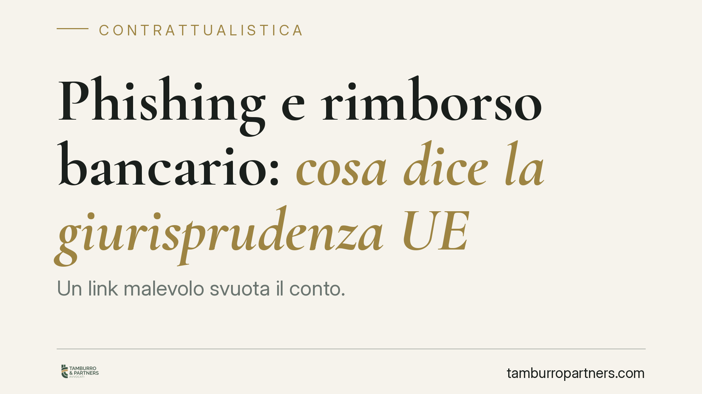

Phishing e rimborso bancario: cosa dice la giurisprudenza UE
Un link malevolo svuota il conto. Chi paga? L'orientamento della giurisprudenza europea conferma che, in caso di operazione di pagamento non autorizzata da phishing, l'onere della prova grava sulla banca e il rimborso deve essere immediato. L'eventuale colpa grave del cliente si valuta solo dopo, non prima. Un principio che ribalta la pratica diffusa di scaricare il rischio sul correntista.

Il caso
Un cliente riceve un messaggio che imita la comunicazione della propria banca. Clicca su un link, inserisce le credenziali e autorizza, inconsapevolmente, un'operazione in favore dei truffatori. Il conto si svuota. La banca rifiuta il rimborso sostenendo che il cliente ha agito con negligenza.
È lo schema classico del *phishing* (la sottrazione di dati tramite inganno). Il nodo giuridico è semplice: in questi casi l'operazione è stata "autorizzata" dal titolare? E, in ogni caso, chi deve provare cosa?
Su questo tema esiste un orientamento consolidato della Corte di giustizia dell'Unione europea e dei giudici nazionali, che muove dalla Direttiva 2015/2366 (c.d. PSD2). *Avvertenza*: i riferimenti a singole cause pendenti vanno verificati sulla fonte ufficiale (ECLI e dispositivo) prima di ogni uso operativo; qui ci limitiamo ai principi normativi certi.
Inquadramento normativo
La PSD2 distribuisce in modo preciso oneri e responsabilità tra prestatore di servizi di pagamento (la banca) e utente.
Obblighi dell'utente — L'art. 69 impone al titolare dello strumento di pagamento di usarlo secondo le condizioni contrattuali e di adottare misure ragionevoli per proteggere le credenziali di sicurezza personalizzate.
Onere della prova — L'art. 72 stabilisce che, quando l'utente nega di aver autorizzato un'operazione, spetta alla banca provare che l'operazione è stata autenticata, correttamente registrata e non inficiata da guasti tecnici. Non basta: la Direttiva precisa che la mera registrazione dell'uso dello strumento non è di per sé sufficiente a dimostrare né l'autorizzazione, né il dolo o la colpa grave del pagatore.
Rimborso — L'art. 73, par. 1, obbliga la banca, in caso di operazione non autorizzata, a rimborsare l'importo "immediatamente e in ogni caso entro la fine della giornata operativa successiva" a quella in cui ha preso atto o è stata informata dell'operazione. La banca può sospendere il rimborso solo se ha un ragionevole sospetto di frode e comunica per iscritto tali motivi all'autorità nazionale competente.
Responsabilità del pagatore — L'art. 74 disciplina i casi in cui il pagatore può sopportare le perdite: in presenza di dolo o colpa grave non trova applicazione il limite di franchigia previsto per i casi ordinari.
Da non confondere — Il blocco preventivo dello strumento per motivi di sicurezza (art. 68) è istituto diverso dal meccanismo di rimborso dell'art. 73.
Recepimento italiano — In Italia la materia è regolata dal D.Lgs. 11/2010, come modificato dal D.Lgs. 218/2017 di attuazione della PSD2. I correntisti italiani possono quindi invocare queste norme direttamente, senza passare dalla Direttiva.
Implicazioni pratiche
Il punto decisivo è la sequenza temporale. Prima il rimborso, poi la discussione sulla colpa.
La banca non può trattenere il denaro invocando una presunta negligenza del cliente: deve prima restituire, salvo il caso del sospetto di frode formalmente comunicato. Solo in un secondo momento potrà agire per recuperare le somme, dimostrando il dolo o la colpa grave del titolare.
E qui va distinta la colpa lieve dalla colpa grave. La colpa lieve — una disattenzione ordinaria — non priva il cliente della tutela piena oltre la franchigia di legge. La colpa grave è altra cosa: una condotta gravemente imprudente, un'evidente violazione delle più elementari cautele. La prova di questa gravità grava sulla banca. Nessun automatismo: cliccare un link ingannevole non equivale, di per sé, a colpa grave.
Non esistono garanzie di esito: molto dipende dalle circostanze concrete, dalla sofisticazione dell'inganno e dalla documentazione disponibile.
Cosa fare in concreto
- Segnala subito l'operazione non autorizzata alla banca, per iscritto e con data certa (PEC o raccomandata), chiedendo espressamente il rimborso ai sensi dell'art. 73 PSD2 e del D.Lgs. 11/2010.
- Conserva ogni prova: messaggi ricevuti, screenshot del link, orari, eventuali chiamate. Sono elementi decisivi sulla dinamica dell'inganno.
- Sporgi denuncia alle autorità di polizia: utile sul piano penale e come riscontro della frode.
- Pretendi la motivazione scritta in caso di rifiuto o sospensione del rimborso: la banca deve indicare le ragioni del sospetto di frode.
- Se il rimborso non arriva, è valutabile il reclamo all'Arbitro Bancario Finanziario e, in subordine, l'azione giudiziaria.
Disclaimer
Contributo informativo a cura di Tamburro & Partners - Avv. Giuseppe Tamburro. Non costituisce parere legale.
Ogni contratto ha il suo equilibrio.
Se vuoi una revisione delle clausole o una redazione su misura, scrivi allo studio. Ti rispondiamo entro un giorno lavorativo.